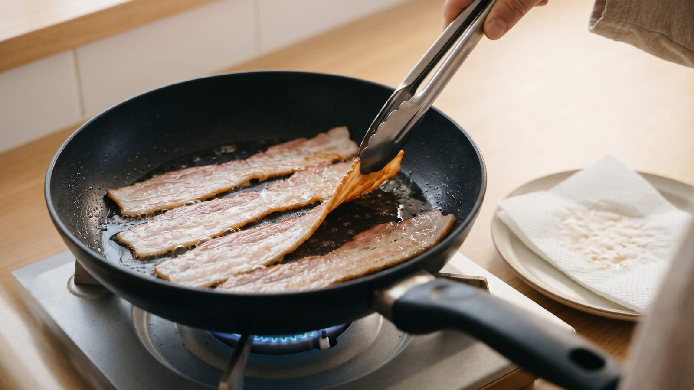

ベーコンは冷たいフライパンから焼く｜脂が溶け出す温度と焦げる速さ
朝ごはんやお弁当の用意でベーコンを焼くとき、脂身はまだ白いままなのに、赤身の端っこだけが黒く焦げてしまったことはありませんか。
全体をきれいに香ばしく焼くコツはとてもシンプルです。油をひかず、火をつける前の冷たいフライパンに並べてから火にかけることです。
なぜ冷たいフライパンから焼くのか
ベーコンは豚のばら肉を塩漬けし、煙でいぶして作られていて、赤身と脂身がきれいな層になっています（農林水産省「ベーコン類の日本農林規格」）。
豚の皮下の脂は体温より少し高いくらい（およそ42℃）の、比較的低い温度で溶け切ることが県の試験で確かめられています（岩手県農業研究センター 2019年の成果）。
一方で、食材を焼いたり炒めたりすると、おいしい色と香りが生まれます。水を使う煮物などと違って、焼く調理では食材の温度が120℃以上になることがあり、水分が飛んで温度が上がると色づきが進みやすくなります（農林水産省「食品中のアクリルアミドに関する情報 よくある質問」）。
これは、フライパンでバターを溶かすときの様子とよく似ています。熱々に熱したフライパンにバターを落とすと、全体が溶け広がる前にふちからパッと茶色く色づいてしまいますが、冷たい鍋に入れて弱火で温めると、焦がさずに溶かしやすくなります。
家庭料理でどう考えるか
熱したフライパンにベーコンを入れると、水分の少ない薄い赤身のふちが一気に熱くなり、先に色づきが進んで焦げてしまいやすいと考えられます。
反対に、火をつける前の冷たいフライパンから少しずつ温めれば、赤身が焦げる前に脂身から脂がじわじわと溶け出してきます。その脂がフライパンとベーコンのすき間を埋めて、お肉全体に熱をやさしく均一に伝えてくれると考えられます。
材料と手順
焼き時間や火加減は家庭での目安です。お使いのフライパンやコンロに合わせて加減してください。
* 薄切りベーコン：4枚（約60g、2人分） * 油：ひかない
- 火をつける前の冷たいフライパン（直径26cm程度）に、ベーコンを重ならないように並べる。
- 弱めの中火にかける。2〜3分ほど経つと、白い脂身が透き通ってきて、フライパンに脂がじわじわとにじみ出る。
- 脂身が透き通り、ふちが薄く色づいてきたら裏返す（火にかけてから5〜6分が目安）。
- フライパンに脂がたまってきたら、フライパンを少し傾けてキッチンペーパーで吸い取る。脂が多いまま焼き続けると揚げ焼きのようになり、色が一気に濃くなってしまいます。
- 裏返して2〜3分焼き、全体が濃いきつね色になってカリッとしたら取り出す。黒く焦げるまで焼きすぎないようにし、「加熱調理用」と書かれたベーコンは中までしっかり火を通す。
- フライパンに残った脂は、少量なら同じフライパンで青菜やキャベツを炒めて使い切る。使わない脂はキッチンペーパーでふき取ってから洗い、流しの排水口には流さない。
油をそのまま排水口に流してしまうと、下水道のパイプの中で冷えて固まり、詰まりや嫌なにおいの原因になります（東京都下水道局、福岡市）。フライパンに残った脂は「ふき取る」か「使い切る」のが、家庭でもできる気軽なルールです。
別の日常場面への広がり
「脂の多いお肉は低めの温度から温め、自分自身の脂で焼く」というコツは、ほかの料理にも生かせます。
たとえば、鶏もも肉を皮目から焼くときや、豚バラの薄切り、ひき肉を炒めるときにも、冷たい状態や低めの火加減からスタートすると、にじみ出た脂でお肉を焼きやすくなります。フライパンに残った脂をキャベツ炒めなどに回したり、ペーパーでサッとふき取ってから洗ったりする後片付けの工夫も、いつものお肉料理ですぐに使えます。
まとめ
ベーコンを焼くときは、冷たいフライパンに並べてから火をつけると、赤身が焦げる前に脂身がゆっくり溶け出しやすくなります。途中で余分な脂をペーパーで吸い取りながら、弱めの中火で好みのきつね色に仕上げてみてください。残った脂は野菜炒めに使ったりサッとふき取ったりして、流しに流さず気持ちよく使い切りましょう。
---
参考資料
* 農林水産省：ベーコン類の日本農林規格 * 岩手県農業研究センター：2019年の成果 * 農林水産省：食品中のアクリルアミドに関する情報 よくある質問 * 東京都下水道局：「油・断・快適！下水道」キャンペーン（2024年9月） * 福岡市：下水道は正しく使用してください（2026年9月）